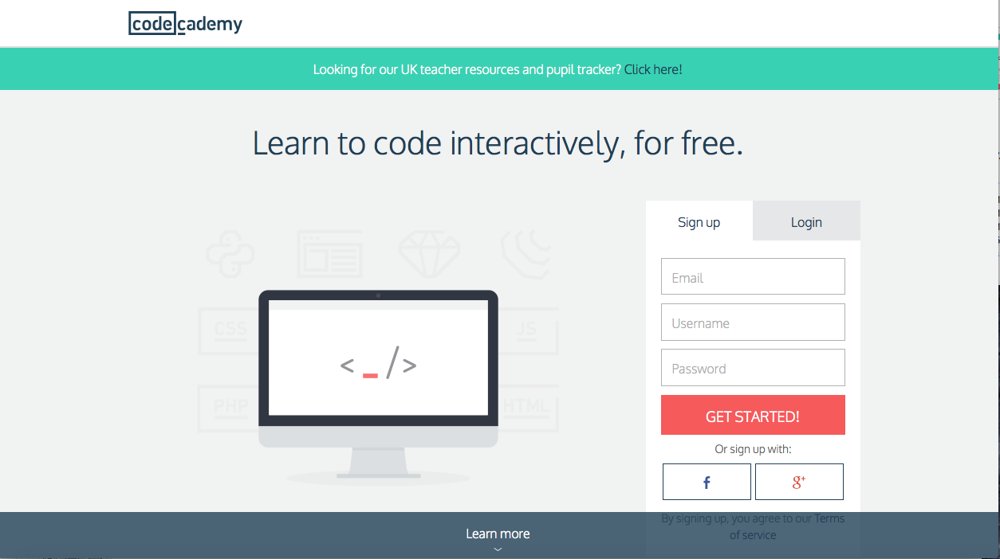

Nowadays there is a plethora of information on the web about learning Java Script. A selection of resources can be found on the Readings page.
For this course, I would recommend you do the following:
Follow the link and load up the website. You should see the following:

Once you have signed up for an account, you will see:
Select JavaScript and off you go!
The HTML & CSS areas are also worth exploring for improving the look and feel of your website.